The problem
Cashiers needed 4+ taps and several screens to complete a basic transaction, and stores needed a separate system just to add a product.
What I did
Designed the mobile version of the POS, from research to final screens, with the PM, engineering and stakeholders. I interviewed store owners, ran workshops and tested the app with cashiers in a real store. After my colleague left, I also designed Connected devices.
Key decisions
- One scrollable home screen with the cart always visible
- Adding products straight from the till, scoped with engineering to keep product data secure
Result
fewer transaction errors
30% faster cashier tasks
1–2 taps per sale instead of 4+
Part of the Focalpay platform: the POS sells products and prices set up in the Back-office, and takes over cash payments from the Mobile shopping app.
The challenge
Focalpay's checkout is built around one virtual basket for every way of shopping: a staffed till, self-checkout or the shopper's own phone. The cashier POS is the staffed side of that basket. It runs on almost any device instead of dedicated POS hardware, so retailers need less equipment and only one system.
At a store till, every second counts twice: for the cashier, and for the customer waiting in line. A slow checkout means longer queues and fewer sales per hour, so a cashier app that makes people stop and think is a business problem, not just a usability problem.
Focalpay, a Swedish retail-tech company, built a cashier app that runs on any phone, tablet or touchscreen. When I joined, it was already used in several stores, but one sale meant moving between several screens, and a missing product had to be added in a separate back-office system.
The one question
So every decision had to answer one question:
does this keep the queue moving?
My role
- One of two designers. I owned the mobile version, the phone screens cashiers hold in their hand; my colleague designed tablet and desktop.
- From research to final screens, with the PM, engineering and stakeholders.
- After my colleague left, I also designed Connected devices, as the only designer.
- Every screen designed to WCAG AA.
What we found
I combined interviews, workshops, in-store observation and usability testing. Four findings shaped the work:
- Cashiers rarely look at the screen during a sale. They rely on muscle memory and peripheral vision.
- The cart must always be visible. "We need the cart front and centre, always. Everything else is secondary."
- Cashiers wanted to stay on the home screen to add products, apply discounts and scan barcodes.
- Adding products in a separate system was a big problem for store owners.
From findings to directions
I grouped the findings into four themes, each pointing to a design direction:
- Speed & flow: every extra tap costs time → one scrollable home screen
- Product management: an unknown barcode left cashiers stuck → create a product right from the scan
- Discounts & refunds: too many options under pressure → two simple choices
- Reports & end of day: totals needed a second app → reports built into the POS
User journey
Focalpay app
to the system
manually
product grid
barcode
product not found
product list
to the cart
to item or cart
transaction done
partial refund
daily report
day complete
The low points were an unknown barcode and adding products in another system, exactly where the redesign needed to help most.
The problem wasn't the speed. It was the tabs.
Sales take too long
The tabs break the cashier's focus
The data showed that sales were slow, but not why. So I went to the store and watched cashiers work. Every sale meant jumping between tabs, and every jump broke their focus. With a customer waiting, some got lost in the middle of a sale.
I shared this with my manager, who asked: "What if the app had no tabs at all?" That question changed the direction of the redesign.
The aha moment
Speed didn't come from faster screens. It came from never leaving the one screen.
The engineers worried one screen would become messy. I designed the new version and walked them through it, and once they saw it, their concerns turned into support.
Four decisions
Decision 1 · One home screen for the whole sale
The cart, product list, quick actions and daily summary all live on one scrollable screen. Purchase, Scan, Add bag and Add discount are always visible, however full the cart is.
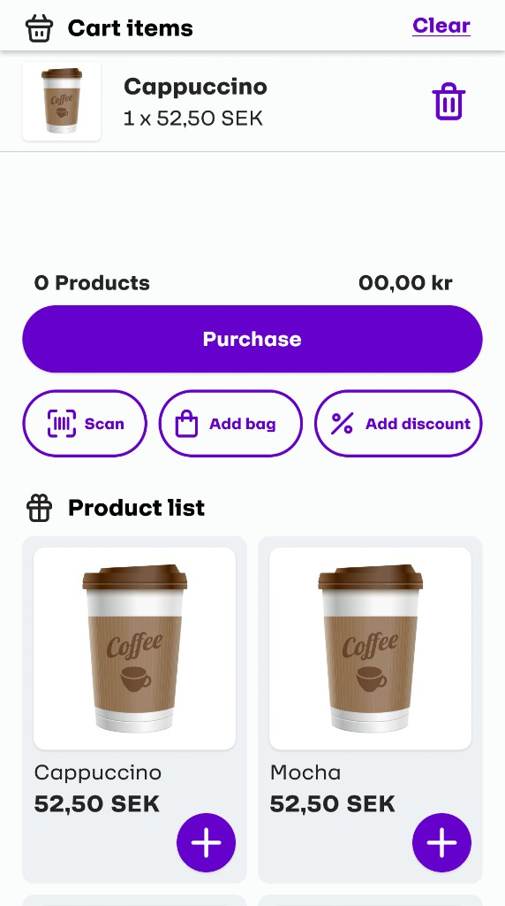
Empty cart — product grid visible below
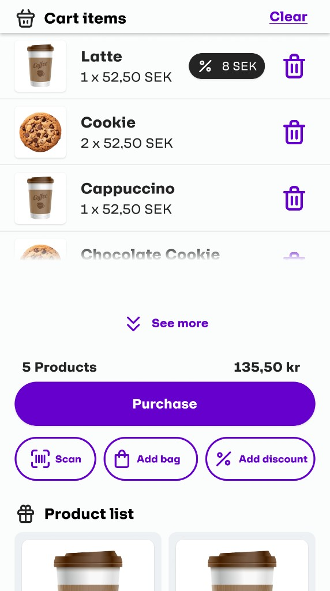
Items in cart — Purchase CTA always visible
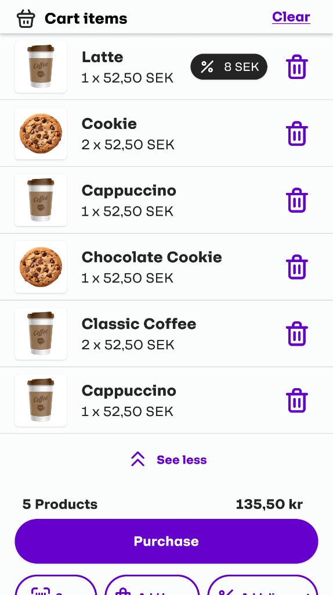
Expanded cart — all items visible
Home screen · before and after

Decision 2 · Adding products at the till, safely
Store owners wanted to add products in the POS, but engineering worried about changing sensitive catalogue data. With the PM and engineering lead, I found a middle ground: cashiers create a basic product (name, EAN and sales account) at the till, while full editing stays in the back-office. When a scan finds nothing, the app offers to add the product right away.
Nothing stops a queue quite like a product that doesn't exist.
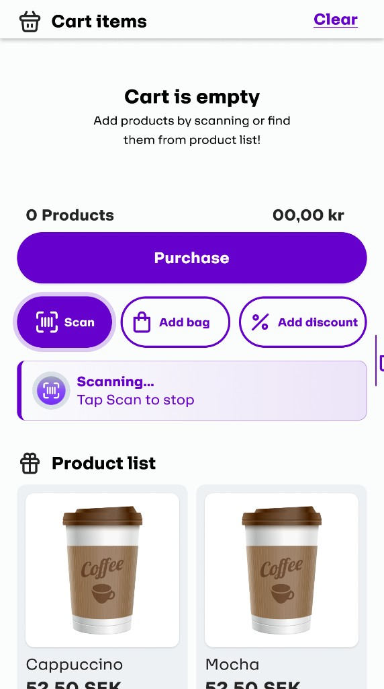
Scanning mode — camera active, product list visible
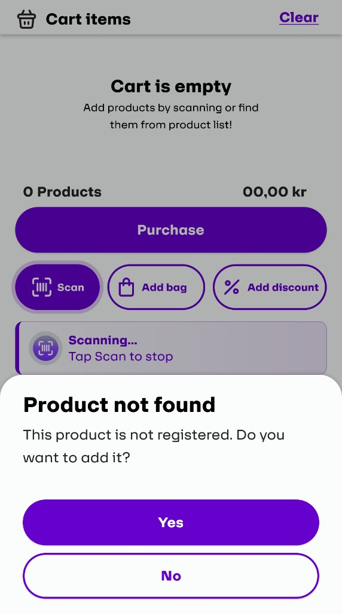
"Product not found" — prompt to add it instantly
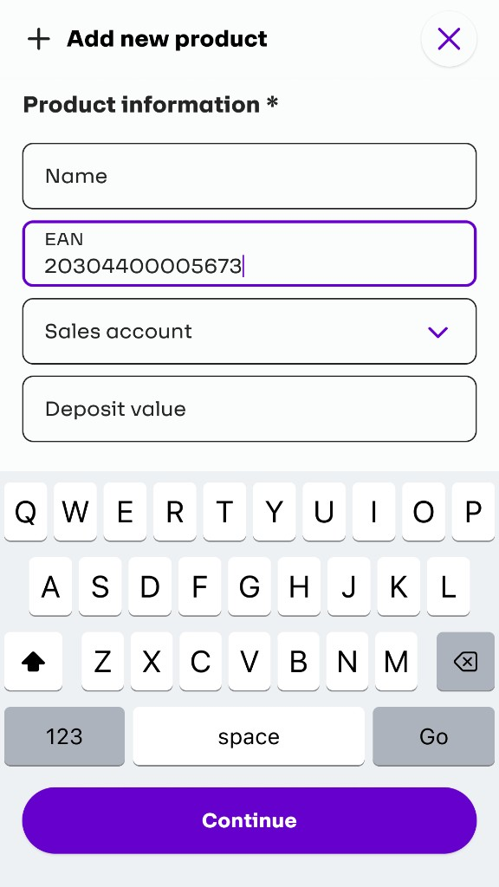
Add new product — Name, EAN, Sales account
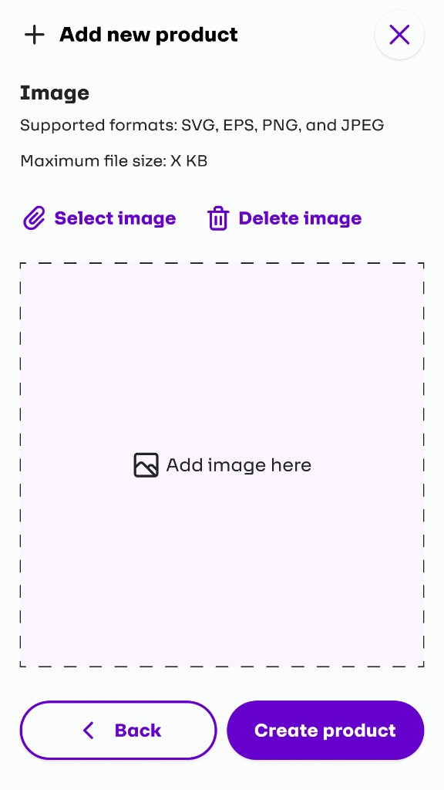
Step 2 — Upload product image
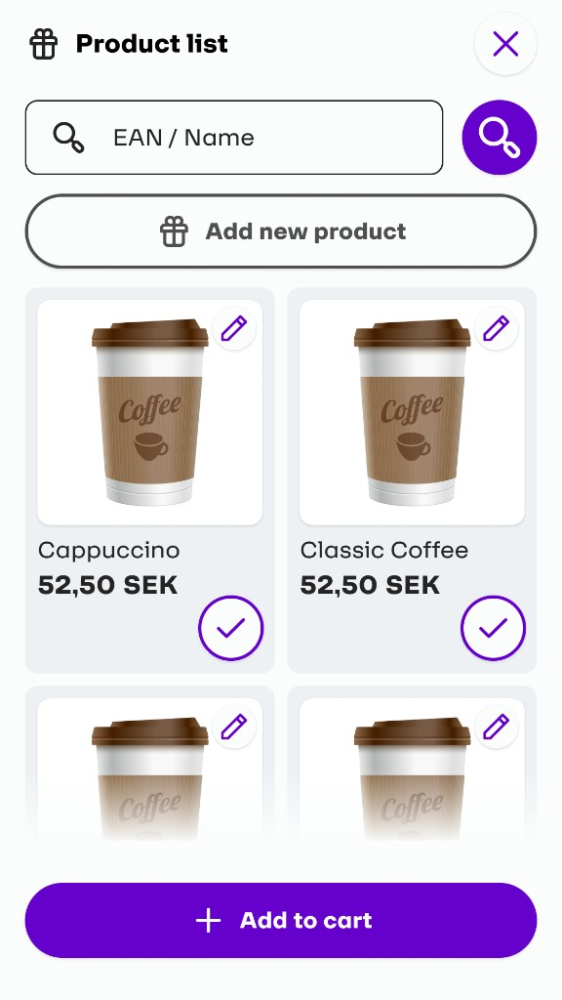
Product list — search by EAN or name
Product flow · before and after

Decision 3 · Discounts, refunds and reports in two choices or less
Discounts apply to one product or the whole receipt, in kronor or percent, with large keys that work even with gloves. Refunds separate refundable from non-refundable items. Daily reports are built in, and a "Coming up" list prevents gaps on days without sales.
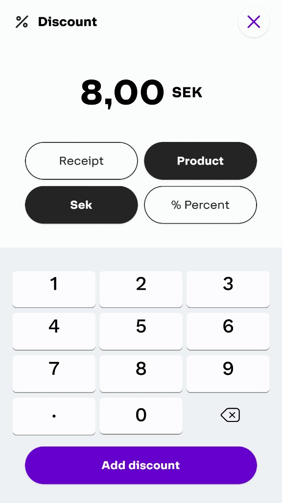
Discount input — SEK or %, receipt or product

Discount applied — shown as banner in cart
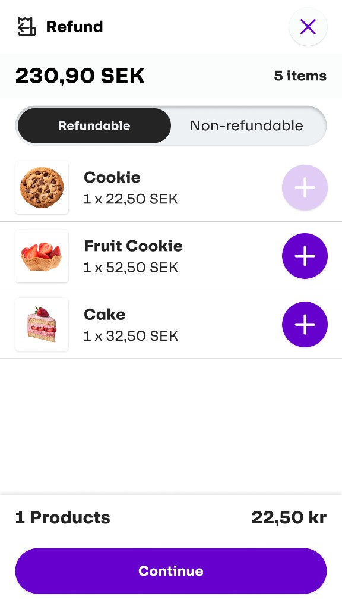
Refundable items — tap + to select
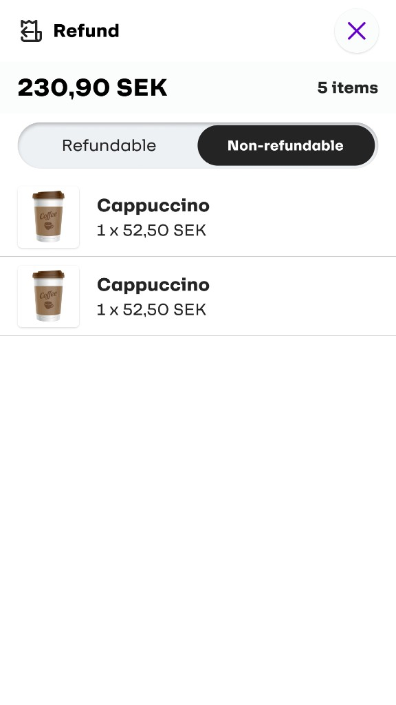
Non-refundable — clearly separated
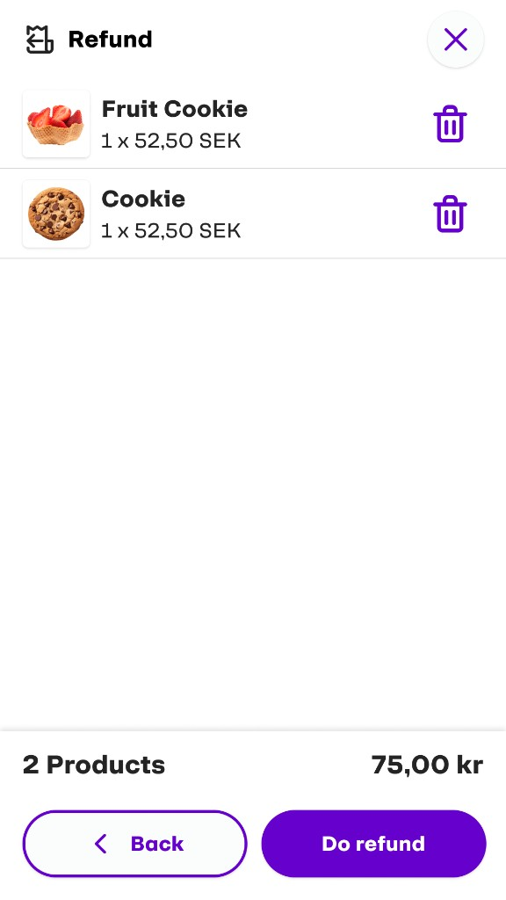
Selected items — total & "Do refund" CTA
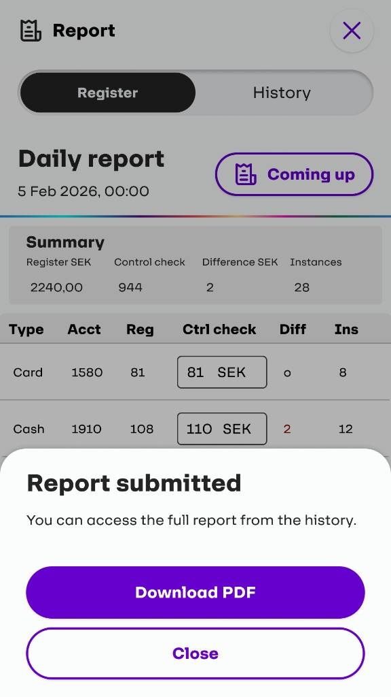
Transactions — filter by method or date
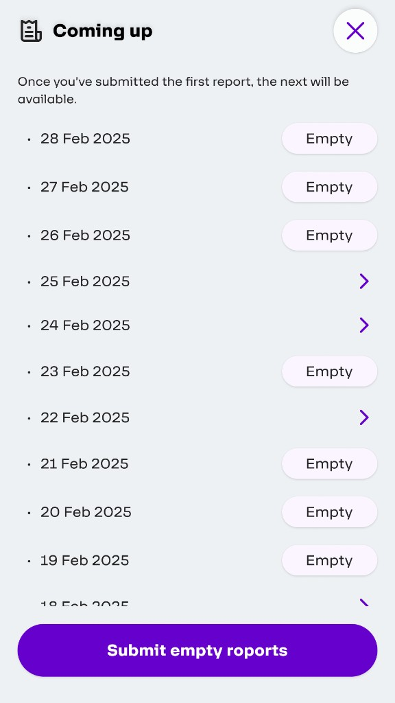
Daily report — register vs. control check
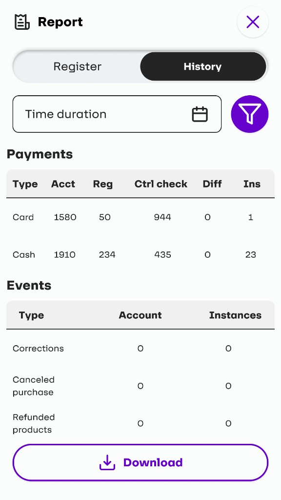
Fetch today's transactions before submitting
Refunds · before and after

Decision 4 · Hardware status at a glance
In a store, the POS works with a scanner, a receipt printer, a keyboard and sometimes a Cash Guard. One settings screen shows what's connected and what isn't, so problems show up before a customer is waiting. I designed this as the only designer, after my colleague left.

Try it yourself
Click through the POS like a cashier would: scan items, take a payment and move through the flows.
Design system
Every screen is built on a design system I set up from the start: colours, typography, spacing and component states. It's light-theme only, for bright store lighting.

Brand palette, type scale, spacing, radii, and scalable button states

Buttons, refund flow pattern, inputs, segmented controls, and search + scanning
What changed
5 cashiers completed the same 5 core tasks (scan, add to cart, apply a discount, take a payment and print a receipt) in the old and the new version, in a real store.
70%
fewer transaction errors
30%
faster cashier tasks
1–2 taps
per sale instead of 4+
0
back-office trips to add a missing product
"The scroll feels natural. I don't have to think about where anything is."
— Cashier, in-store test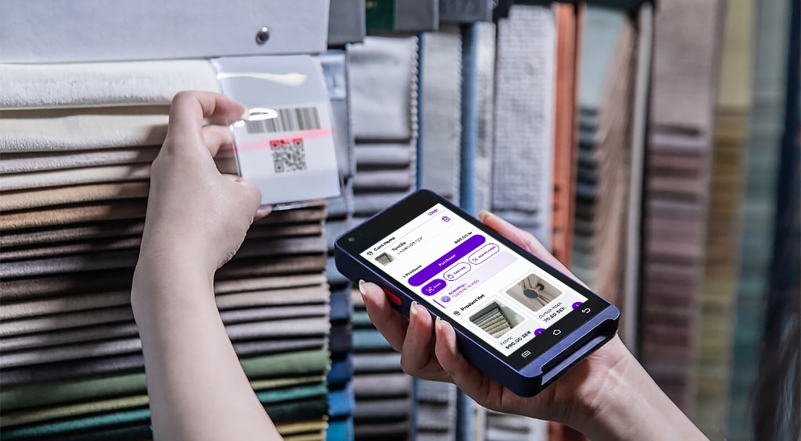
The POS on a handheld device during in-store testing
What I learned
- Speed is part of usability. When someone is waiting at the till, most of the work is removing steps.
- The real store shows what the lab can't. Cashiers under pressure use the app very differently.
- What I'd do differently: I'd test in a real store earlier, before the main flows were finalised, because that's where the most important problems showed up.